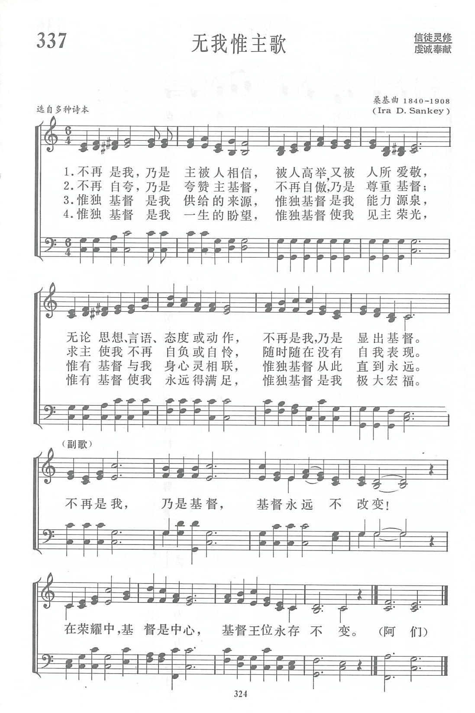
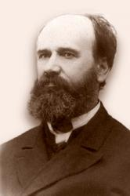

|
|
讚美詩(新編) |
|
1 Not I, but Christ, be honored, loved, exalted; Refrain: 2 Not I, but Christ, to gently soothe in sorrow; 3 Not I, but Christ, in lowly, silent labor; 4 Christ, only Christ, ere long will fill my vision; Amen. |
|
|
https://www.zanmeishige.com/tab/14010.html?songbook=1&index=337

|
|
|
|
|


Not I But Christ | Help in Daily Living | Fountainview Academy https://www.youtube.com/watch?v=jDN1FM-2Z7A -
赞美诗 第337首 无我惟主歌
https://www.youtube.com/watch?v=2lrrlHRhUHY - 不再是我(精典聖歌100首1稱頌主)
https://youtu.be/RN2H4IYvzwg
| Text: | Not I, But Christ |
| Author: | Mrs. A. A. Whiddington, 19th Century |
| Tune: | EXALTATION |
| Composer: | C. H. Forrest, 19th Century |
| Short Name: | Ada A. Whiddington |
| Full Name: | Whiddington, Ada A. |
| Birth Year: | 1855 |
| Death Year: | 1933 |
| Short Name: | Albert B. Simpson |
| Full Name: | Simpson, A. B. (Albert Benjamin), 1843-1919 |
| Birth Year: | 1843 |
| Death Year: | 1919 |
Albert B. Simpson was the founder of The Christian and Missionary Alliance.

第337首 无我惟主歌 Not I ,but Christ _库欣
经文：“我已经与基督同钉十字架，现在活着的不再是我，乃是基督在我里面活着”(加2：2O)。
《无我惟主歌》是福音派教会所喜爱的一首诗，《新编》五线谱注明“选自多种诗本”，未注明作者姓名。据有人考证，词作者为库欣(事略参阅第118首)，曲作者是桑基(事略参阅第54首)。
这是一首已经得着基督、见到他的荣光、没有自我表现之人所发出的赞颂。这也是每个竭力追求主的人的愿望。没有自己只见主，是何等宝贵的属灵经历!许多人往往是看到了基督的信徒所显出的思想、言语、态度或动作而接受救恩的。
这首诗也可使信徒对照自己：我有没有“无我惟主”？
http://www.qingdaochurch.com/newsa_detail.asp?AutoID=777
�NOT I, BUT CHRIST� hymnstudiesblog
�I am crucified with Christ; nevertheless I live; yet not I, but Christ liveth in me?� (Galatians 2:20)
INTRO.:
A hymn which emphasizes the importance of being crucified spiritually so that it is not us but Christ living in us is �Not I, But Christ.� The text is usually attributed to Ada Anne Fitzgerald Whiddington who was born in 1855 somewhere in England. The daughter of Robert Fitzgerald, Ada married Richard Whiddington. Their son Richard later became Cavendish Professor of Physics at Cambridge University. Ada is thought to have been associated with the Keswick Convention. The poem was produced around 1880. The most commonly used tune (Simpson) with this hymn was composed about 1891 by Albert B. Simpson (1843-1919).
Sometimes the text is ascribed to Frances (Fannie) Eugenia Bolton who was born on Aug. 1, 1859, at Chicago, IL. After graduating in 1883 from the Preparatory School of Northwestern University in Evanston, IL, Bolton worked as a correspondent for the Chicago Daily InterOcean (predecessor to the Chicago Tribune). She joined the Seventh-day Adventist denomination in 1885, served an assistant to Ellen G. White from 1887 to 1890, and authored Battle Hymn of the Kingdom in 1898. In 1890, Bolton apparently took some stanzas from Ada Whittington�s hymn, perhaps added some of her own, and composed her own tune (Bolton) for it.
Francis Bolton died on June 28, 1926, at Battle Creek, MI. Ada Whittington died on Mar, 14, 1933, at Hendon, England. Other tunes that have been used with the hymn include one (Albany) composed by J. Albert Jeffrey in 1886 for the hymn �Ancient of Days;� one (Consolation) composed by Felix Mendelssohn and most often used with the hymn �We Would See Jesus;� one (Morning Star) composed by James P. Harding in 1892 and sometimes associated with the hymn �Brightest and Best;� and one (Exaltation) composed by C. H. Forrest in 1925.
The song reminds us that the emphasis in our lives should be not on self but on Christ.
I. Stanza 1 points out that only Christ should be honored in every aspect of our lives
�Not I, but Christ, be honored, loved, exalted;
Not I, but Christ, be seen, be known, be heard;
Not I, but Christ, in every look and action,
Not I, but Christ, in every thought and word.�
A. We should honor the Son even as we honor the father: Jn. 5:23
B. This means that we should live in such a way that others will see, know, and hear Christ in us: Col. 1:23
C. Therefore, we must make sure that every look, action, though, and even every word, which reflects the attitude of our hearts, is pleasing to Him: Matt. 12:33-37
II. Stanza 2 points out that only Christ should receive glory for the good that we do
�Not I, but Christ, to gently soothe in sorrow,
Not I, but Christ, to wipe the falling tear;
Not I, but Christ, to lift the weary burden,
Not I, but Christ, to hush away all fear.�
A. When we soothe others who are in sorrow, we are doing the will of Christ: Matt. 25:31-40
B. When we wipe the falling tear, we are acting as members of the body of Christ in suffering with other members: 1 Cor. 12:25-27
C. When we lift the weary burden we are fulfilling the law of Christ: Gal. 6:2
III. Stanza 3 points out that only Christ should be in control of our speech
�Christ, only Christ! no idle words e�er falling,
Christ, only Christ; no needless bustling sound;
Christ, only Christ; no self important bearing;
Christ, only Christ; no trace of �I� be found.�
A. We should let no idle words proceed out of our mouth but only that which will edify: Eph. 4:29
B. While there is a time to speak, there is also a time to keep silent, so we should not be known for needless bustling sound: Matt. 6:7
C. Nothing in our speech should ever show self important bearing or emphasis on �I�: Rom. 12:3
IV. Stanza 4 points out that only Christ can supply our every need
�Not I, but Christ, my every need supplying,
Not I, but Christ, my strength and health to be;
Not I, but Christ, for body, soul, and spirit,
Christ, only Christ, here and eternally.��
A. We must look to Jesus Christ alone through whom God will supply all our needs: Phil. 4:19
B. Thus, only through Christ will God preserve our body, soul, and spirit: 1 Thess. 5:23
C. And only godliness, which involves serving Christ, is profitable both here and in eternity: 1 Tim. 4:8
V. Stanza 5 points out that only Christ should be magnified in our deeds
�Not I, but Christ, in lowly, silent labor;
Not I, but Christ, in humble, earnest toil;
Christ, only Christ! No show, no ostentation!
Christ, none but Christ, the gatherer of the spoil.�
A. We should always strive to be abounding in the work of the Lord: 1 Cor. 15:58
B. However, there must be no show or ostentation because we are His workmanship: Eph. 2:10
C. Hence, we should want Christ to be the gatherer of the spoil as He is magnified in our bodies: Phil. 1:20
VI. Stanza 6 points out that only Christ will take us home to glory
�Christ, only Christ, ere long will fill my vision;
Glory excelling soon, full soon I�ll see�
Christ, only Christ, my every wish fulfilling�
Christ, only Christ, my all in all to be.�
A. Someday only Christ will fill our vision because we shall see Him as He is: 1 Jn. 3:2
B. Then, we shall appear with Him in glory: Col. 3:4
C. When this occurs, He will be our all in all just as we shall have striven to make Him our all in all here in this life: Col. 3:11
CONCL.: The Simpson version has a chorus, which is always omitted when the text is used with the other tunes and sometimes omitted even when used with the tune by Simpson:
�O to be saved from myself, dear Lord,
O to be lost in Thee,
O that it might be no more I,
But Christ, that lives in me.�
Yes, there are things that God expects me to do in my relationship with Him as well as in my relationships with others here upon this earth. However, if by God�s grace I am able to meet the conditions upon which He has promised to grant me eternal life, I must remember that it is �Not I, But Christ.�
https://hymnstudiesblog.wordpress.com/2010/11/15/not-i-but-christ/
Not I, but Christ Wordwise Hymns
Words: Ada Anne Fitzgerald Whiddington (b. _____, 1855;
Mar. 14, 1933)
Music: Albert Benjamin Simpson (b. Dec. 15, 1843; d. Oct.
29, 1919)
Links:
Wordwise Hymns
The Cyber
Hymnal
Hymnary.org
Note: The Cyber Hymnal gives a date of 1891 for this hymn, though it may have appeared as much as a decade earlier. Whiddington wrote six stanzas, but most hymnals include only four (CH-1, 2, 3, and 6). Hymns of the Christian Life, the hymnal of Simpson’s own Christian and Missionary Alliance denomination, also has CH-4.
As to the tune, some books use the one written by Simpson. But others have a tune named Exaltation, by C. H. Forrest (of whom nothing is known). In my view, the latter is the superior tune. There are others as well, some using the refrain, others omitting it.
CH-1) Not I, but Christ, be honoured, loved, exalted;
Not I, but Christ, be seen be known, be heard;
Not I, but Christ, in every look and action,
Not I, but Christ, in every thought and word.
O to be saved from myself, dear Lord,
O to be lost in Thee,
O that it might be no more I,
But Christ, that lives in me.
CH-2) Not I, but Christ, to gently soothe in sorrow,
Not I, but Christ, to wipe the falling tear;
Not I, but Christ, to lift the weary burden,
Not I, but Christ, to hush away all fear.
This is a powerful hymn expressing the believer’s aspiration that Christ be more and more revealed in and through him. Several key Bible texts relate to the theme.
¤ The words of John the Baptist: “He must increase, but I must decrease” (Jn. 3:30). Though he likely meant this in terms of public prominence and influence in ministry, it stands as a simple expression that can be applied more widely. In our lives, we should desire that more of Christ be seen.
¤ God’s stated purpose for us is this: “Whom He foreknew, He also predestined to be conformed to the image of His Son” (Rom. 8:29).
¤ The ministry of the Holy Spirit reproduces in us the “fruit” of Christlike character: “Beholding as in a mirror the glory of the Lord, [we] are being transformed into the same image from glory to glory, just as by the Spirit of the Lord” (II Cor. 3:18; cf. Gal. 5:22-23).
¤ Paul’s testimony was: “I have been crucified with Christ; it is no longer I who live, but Christ lives in me; and the life which I now live in the flesh I live by faith in the Son of God, who loved me and gave Himself for me” (Gal. 2:20). The hymn uses the precise phrase, “not I, but Christ,” as it’s found in the King James Version.
¤ In yet another passage, Paul expresses the hope, “That the life of Jesus also [should] be manifested in our mortal flesh” (II Cor. 4:11).
It’s not that we become mere robots, manipulated by God, with no identity of our own. Rather, as we grow spiritually, the Holy Spirit seeks to produce in us the holy and loving character of Christ. Through our meditation on the Word of God, we learn to think God’s thoughts after Him. We are “transformed by the renewing of [our] mind” (Rom. 12:2). Sometimes the goal is referred to as Christlikeness. The Bible describes it as bearing the fruit of the Spirit.
CH-5) Not I, but Christ, my every need supplying,
Not I, but Christ, my strength and health to be;
Not I, but Christ, for body, soul, and spirit,
Christ, only Christ, here and eternally.
In this life, we’ll never reach perfection. We are a work in progress, under the hand of God. But when others see us responding to life’s situations, they should be able to say, “That must be what Jesus is like.” Then, when we are caught up into the presence of the Lord, His design for us will finally be fulfilled. “We shall be like Him, for we shall see Him as He is” (I Jn. 3:2). We look expectantly to the time when:
CH-6) Christ, only Christ, ere long will fill my vision;
Glory excelling soon, full soon I’ll see–
Christ, only Christ, my every wish fulfilling–
Christ, only Christ, my all in all to be.
Questions:
1) What does the refrain mean by the expression, “oh to be saved from
myself”?
2) In your own life, what area do you believe is the least Christlike, and most needing daily grace?
https://wordwisehymns.com/2015/03/18/not-i-but-christ/